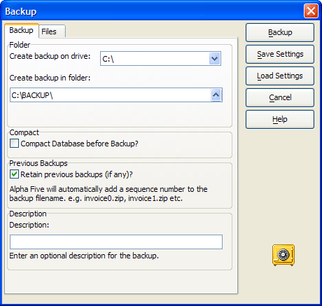

Backup Database
Alpha Anywhere lets you create a backup of your database, and to restore a previously backed up database.
To back up a database:
Select Tools > Backup/Restore Database > Backup Database.
The Backup dialog box appears.

Select the drive for the backup files from the Create backup on drive list. Backup files are best saved separately from the working files, such as on a CD, in a zip file, or in some other remote location.
Click
 to select the folder for the backup files from the Create backup in folder field.
to select the folder for the backup files from the Create backup in folder field.Display the Files tab to place checkmarks to the left of the files that you wish to backup.
Optionally, check Include Web Projects files? (Alpha Anywhere version 6 and above.)
Optionally, click Mark Files... to display the Mark Files dialog box.
Click OK to place checkmarks to the left of all files.
Click Data Files Only and OK to place checkmarks to the left of data files only.
Click Application Files Only and OK to place checkmarks to the left of application files only.
Click Files with specified extensions... to select files by their description.
Click OK.
Optionally, click Unmark Files... to display the Mark Files dialog box.
Click OK to remove checkmarks from the left of all files.
Click Data Files Only and OK to remove checkmarks from the left of data files only.
Click Application Files Only and OK to remove checkmarks from the left of application files only.
Click Files with specified extensions... to select files by their description.
Click OK.
If you selected 7d or 8d, you will see the Mark or Unmark dialog boxes.
Place checkmarks next to the file types you want to backup.
Click OK to continue.
|
Category |
Description |
Files |
|
Data Files |
Tables |
.DBF, .CDX, .FPT |
|
Application Files |
Libraries |
.ADB, .ALB, .ALM, .ALX |
|
Table dictionaries |
.DDD, .DDM, .DDX | |
|
Sets |
.SET, .SEM, .SEX |
Optionally, click Backup to copy your files immediately.
Optionally, clear Compact Database before Backup. Note : Compacting your database frequently removes deleted files and reduces the chance of database corruption.
Optionally, clear Retain previous backups.
Optionally, click Load Settings to restore the initial setting that the dialog had when it was opened.
Optionally, click Save Settings to be able to run the backup using the command Tools > Backup/Restore Database > One-step Backup.
If you want to run a backup from a button via action scripting, refer to Run a Custom Backup Job.
See Also
Restore Database, Run a Custom Backup Job, Network Optimization